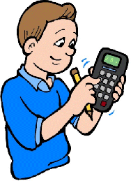
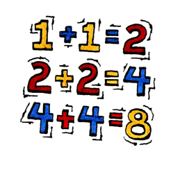

|  |
Trotter
in
Prime Curios |
 |
Background
In the latter part of May of this year (2001) we discovered a very interesting website all about prime numbers, titled appropriately The Prime Pages. There is a companion page connected with it, called Prime Curios, a collection of clever and interesting trivia, moderated by G. L. Honaker, Jr. It is to this 2nd site that this WTM page is concerned.
Naturally, we began submitting our own contributions right away. First, we sent the one about 1992 that appears at the beginning. Then others began to follow in rapid succession. The list soon grew rather lengthy, so we decided to place ours in one location. So what you will see and read below is the results of our number play since that time. Nothing is in any particular order, unless otherwise indicated.
Each entry in the list is preceded by a link (the highlighted number) that will take you to the specific page in the website of Prime Curios, so that you may read all the other interesting facts that other people found about that particular number. We think you will be quite surprised and well rewarded.
So go forward now, and most of all, have fun with numbers!
- 1992 1992 = 8 x 3 x 83. The only other two years in the period 1000 to 1999 to share the structure of "a x b x 'ab'" (where 'ab' is prime and the concatenation of the factors a and b) are 1316 = 4 x 7 x 47 and 1533 = 7 x 3 x 73.
- 1992 If you separate the digits of 1992 like 199 2, you have two primes. Note that 199 is the largest prime less than 2 hundred. Separation in the middle gives us 19 92, and 19 turned upside down along with 92 reversed are prime.
- 2310 2310 = 2 x 3 x 5 x 7 x 11 = 112 + 132 + 172 + 192 + 232 + 292. Note the consecutive digits: 0, 1, 2 and 3.
- 197 197 is the only three-digit prime Keith number.
- 26 The prime factorization of 26 uses the first three counting numbers.
- 17 17 is the smallest Trotter prime, i.e., a prime of form 10 x (n2) + 7, where n = 1, 2, 3 ...
- 1234567 The prime factors of 1234567 (127 x 9721) form a peak-palindromic arrangement of digits (1279721). It is curious that the prime factors of 1279721 are all three emirps (79 x 97 x 167) which upon concatenation form yet another prime (7997167). [Note: see this reference...World of Numbers for more information.]
- 36 The smallest square that is the sum of a twin prime pair: 17 and 19.
- 8 8 is the smallest cube which is the sum of a twin prime pair {3 + 5}.
- 23 2n + 3n is prime for n = 0, 1 and 2.
- 23 23 is the smallest prime for which the sum of the squares of its digits is also an odd prime.
- 31 The number of letters (in English) required to write the word names of the first six primes is the reverse of the sixth prime (13), namely 31.
- 73 73 is the smallest prime whose square (5329) is the concatenation of two multi-digit primes.
- 73 389 and 17 are primes, as is their concatenation (38917). Inserting the lowly 0 between them transforms the prime into a power, i.e. 389017, the cube of 73, a prime itself.
- 83 The cube of 83 (571787) is the smallest case of the concatenation of a pair of 3-digit primes.
- 211151 The smallest Xmas Tree Prime with 3 rows, i.e. 6 digits.
- 2111511013 The smallest Xmas Tree Prime of 4 rows, i.e. of 10 digits.
- 211151101310867 The smallest Xmas Tree Prime of 5 rows, i.e. of 15 digits.
- 3883 This palindrome is transformed into a pal-prime upon the insertion of a single 0 in the middle.
- 121661 121661 is the smallest OP-PO Prime.
- 72727 72727 is a pal-prime, and separating the digits so -- 72 and 727 -- we can now say the sum of the digits of the first 72 primes (2, ..., 359) is 727, another pal-prime. (P.S. I'm submitting this on 7/27 of this year!)
- 277 76729 is the square of the prime 277 and the smallest square with 5 or more digits that is the concatenation of three primes (7, 67, and 29). (Note: the square contains the digits of the root embedded in reverse order.)
- 159 159 = 3 x 53, and upon concatinating the prime factors, we have a peak palindrome, 353, which is itself a prime.
- 159 Its square (25281) is the concatenation of 2 primes: 2 and 5281.
- 77 The square of 77 is 5929, the concatenation of two primes, 59 and 29.
- 181 181, a pal-prime, is the sum of the digits of the first 23 primes (2, ..., 83).
- 217 47 and 89 are primes, as is their concatenation (4789). Inserting the lowly 0 between them transforms the prime into a power, i.e. 47089, the square of 217.
- 311 311 is the 11th three-digit prime for which the sum of the squares of its digits is also a prime; and the sum here is 11 as well.
- 2357 21 + 33 + 55 + 77 and 22 + 33 + 55 + 77 are twin primes. [Trotter, Kulsha]
- 2357 Letting A=1, B=2, ..., Z=26, then 2357 is the sum of all the values of the U.S. Presidents' last names from Washington to Coolidge. [Ref. Wordsworth.]
- 2357 2357 is also the sum of consecutive primes in at least two ways: (773 + 787 + 797) and (461 + 463 + 467 + 479 + 487).
- 17 Using A = 1, B = 2,..., Z = 26, 17 is the smallest non-negative number whose numerical value of its word form is also a prime (109).
- 7 Using A = 1, B = 2, …, Z = 26, the sum of all the letter values in the word names of the numbers from 1 to 7 is a prime (367). If 0 is included, the sum is yet another prime (431).
- 64 Using A = 1, B = 2, …, Z = 26, the sum of all the letter values in the word names of the numbers from 1 to 64 is a prime (7369). If 0 (whose alpha-numeric value is 64) is included, the sum is yet another prime (7433).
- 5 Only 5 U.S. Presidents have 5 letters in their last names (Both Adams, Grant, Hayes, and Nixon).
- 23 23 = 14 + 23 + 32 + 41 + 50.
- 13 Using the first three primes we have: 23 + 5 = 13.
- 111 111 equals the sum of 2 + 3 + 4 + … + 17 minus the sum of the primes less than 17.
- 131 131, a palindromic prime, equals the sum of 2 + 3 + 4 + … + 19 minus the sum of the primes less than 19.
- 414 The exponential factored form of 414 (2 x 32 x 23) consists of three 2's and two 3's; whereas its expanded form (2 x 3 x 3 x 23) has two 2's and three 3's.
- 434 434 is also the sum of the cubes of the digits of the emirp 347.
- 821 The smallest prime of the first prime quadruple for which the sums of the cubes of the digits of the 4 primes (821, 823, 827, 829) are primes themselves (521, 547, 863, 1249).
- 440 The sum of the first 17 primes (2 to 59) and also the number of yards in the quarter-mile race in track-and-field competitions.
- 997 The largest 3-digit prime AND the sum of the cubes of its digits is also a prime (1801).
- 137 The sum of the squares of the digits of 137 is 59, another prime, and all five odd digits are used (Ref. Father Primes).
- 317 The sum of the squares of the digits of the prime 317 is 59, another prime. Note that all odd digits are present.
- 165 165 is a multiple of (16 - 5), which is its largest prime factor.
- 132 The concatenation of its three distinct prime factors (2, 3, and 11) forms primes in three ways: 2311, 2113, and 1123.
- 131143 This prime is composed of three 2-digit primes -- 13, 11, and 43.
- 123456789 Replacing each of the digits, one-by-one with a 0, yields primes in three cases: 1, 2, and 7 (023456789, 103456789, and 123456089). Note that 127 is a Mersenne prime.
- 37 37 + 4n yields primes for n = 1, 2, 3, 4, 5, 6, 7.
- 45 If the first five powers of 2 (2, 4, 8, 16 & 32) are each subtracted from 45 all results are primes (43, 41, 37, 29 & 13).
- 170 The 170th Trotter number (289007) has an all-emirp prime factorization: 37 x 73 x 107. Note: the 3rd prime is a permutation of the digits of the original number.
- 304589267 A prime containing 9 distinct digits, where upon inserting symbols [30/45 + 89/267], we discover the missing digit "1". The only other prime for which this is possible is 536948207. [Trotter and Knop]
- 13831 13831 is the smallest multi-digit palindromic prime such that the sum of it with the next prime (13841) is a palindrome (27672).
- 10501 A palindromic prime that is the sum of 3 consecutive primes (3491, 3499, and 3511), while at the same time serving as the middle prime of a set of three consecutive primes whose sum is another palindromic prime (31513).
- 97679 96769 is the largest 5-digit palindromic prime that is the sum of 3 consecutive primes (32251 + 32257 + 32261).
- 94949 The only 5-digit palindromic prime that is undulating and the sum of 3 consecutive primes (31643 + 31649 + 31657). Note that by adding 3 consecutive primes we only get one other undulating palindrome (16161), which is a non-prime.
- 98789 The largest 5-digit palindrome that is the sum of 3 consecutive primes (32917 + 32933 + 32939). Its prime factorization is 223 x 443 and 223 + 443 = 666!
- 13124...97909 (24-digits) A prime composed of eight 3-digit palindromes of a "consecutive" style, and one-nineth of (118)8 ... 1.
- 11111117 11111117 and 71111111 are both primes, thus emirps.
- 742950290870000078092059247 (27-digits) The first prime in an arithmetic sequence of 10 palindromic primes. It was found by Dubner and his assistants and has common difference of 10101 x 1011.
- 144169 It is also the concatenation of three squares (144, 16, and 9). Note that: sqrt (144) = sqrt (16) x sqrt (9). [Note: this is an extension to another person's "curio".]
- 8609The largest distinct-digit pime. Pimes (pronounced with a long i) are primes whose digits contain circles, i.e., using only the digits 0, 6, 8, 9. Note: 6089 and 8069 are also distinct-digit pimes.
- 174 174 = 72 + 53 (using the first four primes).
- 199 199 is also a Permutable prime, meaning that 919 and 991 are primes as well.
- 2213 2213 is a "sum of cubes" as follows: 23 + 23 + 133.
- 2222 The smallest number divisible by a 1-digit prime, a 2-digit prime, and a 3-digit prime.
- 1429 The prime sum of two famous baseball records: 714, number of homeruns hit by Babe Ruth, and 715, number of the homerun hit by Hank Aaron to break the Babe's record (on 4/8/1974).
- 202 A semiprime palindrome equal to (2 + 3 + 5 + 7)2 - (22 + 32 + 52 + 72). It's the only such case for all primes < 2,000,000,000. [Trotter and De Geest]
- 576 A square equal to (2 + 3 + 5 + 7 + 11)2 - (22 + 32 + 52 + 72 + 112). It's the only such case for all primes < 2,000,000,000. [Trotter and De Geest]
- 223 The sums of the nth powers of its digits are prime for all n between 1 and 6 inclusive: sum of digits = 7, sum of squares of digits = 17, sum of cubes of digits = 43, sum of fourth powers = 113, sum of fifth powers = 307 and sum of sixth powers = 857.
- 607565706 A palindrome resulting from this "prime based" expression: (257 + ... + 607)2 + (2572 + ... + 6072). There are 57 consecutive primes inside each parentheses. Note that this palindrome starts with the last prime added: {607}565706. "57" appears also as a substring, 60756{57}06. The number of the beast {6}075{6}570{6} is included. [De Geest and Trotter]
- 107 Rudy Giuliani was the 107th mayor of New York City.
- 2003 There is only one way to use consecutive integers to produce a sum of 2003.
- 20022002 The prime factorization of 20022002 is 2 x 7 x 11 x 13 x 73 x 137, which when grouped thus, 2 x 11, 13 x 73, and 7 x 137, yield 3 palindromic semi-primes: 22, 949, and 959.
- 1951 1951 is prime, and appears as the 9th term of the sequence 1+9+5 = 15, 9+5+15 = 29, 5+15+29 = 49, etc.
- 98689 The first centered triangular number (i.e. of the form the form of (3n2 - 3n + 2)/2) that is a palindromic prime.
This next group of 7 items is the result of some email correspondence we had with Carlos Rivera (6/27/01). [See Potpourri for that email.] We posed the basic idea, and Carlos provided us with the numbers. (See above on 36 and 8 for the cases of square and cube.)
- 253124999 The smaller of the smallest twin prime pair for which the sum is a 4th power (sum = 1504).
- 4076863487 The smaller of the smallest twin prime pair for which the sum is a 5th power (sum = 965).
- 578415690713087 The smaller of the smallest twin prime pair for which the sum is a 6th power (sum = 3246).
- 139967 The smaller of the smallest twin prime pair for which the sum is a 7th power (sum = 67). (Note: this prime ends with a 6 and 7.)
- 14097...72287 (26-digits) The smaller of the smallest twin prime pair for which the sum is an 8th power (sum = 15188). [The entire number is 140975 6730907423 9886172287.]
- 73099303486215558911 The smaller of the smallest twin prime pair for which the sum is a 9th power (sum = 1749).
- 8954942912818222989311 The smaller of the smallest twin prime pair for which the sum is a 10th power (sum = 16810).
The next items are the results of looking at someone else's "curio", then expanding a little on it. We suggest that you go to the Prime Curio page to see the full number and the name of the original submitter.
- 15555...55551 (33-digits) The digital sum of this prime is 157, another prime (whose digit sum in turn is yet another prime: 13).
- 10220...02201 (55-digits) The digit sum of this prime is 110, which is the double of its number of digits.
- 14444...44441 (67-digits) The digit sum of this prime is 262, a peak palindrome.
- 18181...18181 (77-digits) The digit sum of this 77-digit prime is 343, the cube of 7.
- 31313...31313 (83-digits) The digit sum of this prime is the prime 167.
- 19999...99991 (87-digits) The digit sum of this prime is a palindrome, 767.
- 37777...77773 (87-digits) The digit sum of this prime is 601, another prime.
Finally, we present some items that are harder to categorize. The first one was created by the moderator of Prime Curios, G. L. Honaker, Jr., after we wrote our webpage on Trotter Numbers and Trotter Primes. The second one is a two-person contribution, involving Monte Zerger (whose name and creations can be found in other WTM pages) and ourselves (WTM).
- 735 There are exactly 735 Trotter primes less than 100,000,000. Note the first three odd primes in 735. [Honaker]
- 510 The concatenation of 510 with itself (510510) is the product of the first 7 primes and also the product of the 7th through 10th Fibonacci numbers (13, 21, 34, and 55). [Zerger]
(Continuing the previous curio) The difference between the next prime (19) and the next Fibonacci number (89 - also a prime) is 70, which is the product of the Fibonacci subscripts above. [Trotter]
Note: Some of the above items have been removed from the Prime Curios page, though they at one time were indeed posted. Still it doesn't alter the basic facts about any given entry. It was merely a decision taken later by the site moderator.